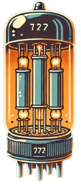
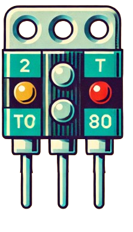
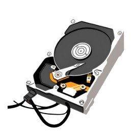

O bit é a unidade fundamental da computação clássica, representando a menor quantidade de informação, podendo assumir os valores 0 ou 1. Ele serve como base para operações lógicas e aritméticas em sistemas digitais, formando a espinha dorsal de processadores, memórias e todo o funcionamento de computadores clássicos.
A história dos bits começa com as válvulas eletrônicas, inventadas no início do século XX. Elas eram usadas para controlar a passagem de corrente elétrica, permitindo que os circuitos estivessem "ligados" (1) ou "desligados" (0). Esse comportamento binário, essencial para a computação, pavimentou o caminho para os sistemas digitais. As válvulas foram fundamentais na criação dos primeiros computadores eletrônicos, como o ENIAC, no final da década de 1940. Com o tempo, as válvulas deram lugar aos transistores, menores e mais eficientes, mas a ideia do bit binário permaneceu central na computação moderna.
Hoje, os transistores são usados para representar os bits controlando a passagem de corrente elétrica em circuitos. Quando a corrente flui, o estado é "1"; quando bloqueada, é "0". Esses pequenos interruptores são os blocos fundamentais em processadores e memórias, permitindo operações digitais rápidas e confiáveis.
Nos dispositivos de armazenamento, como discos rígidos, os bits são gravados magneticamente, com polaridades distintas para representar 0 e 1. No entanto, a computação clássica é limitada porque só processa um valor binário por vez em cada bit, e a capacidade de miniaturização dos transistores está se aproximando de um limite físico . Além disso, a manipulação de grandes volumes de dados e a execução de cálculos complexos tornam-se cada vez mais desafiadoras nesse modelo. Essa limitação impulsiona o desenvolvimento da computação quântica, que utiliza qubits capazes de representar superposição de estados, aumentando exponencialmente o poder de processamento e eficiência em comparação aos sistemas clássicos.